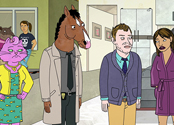
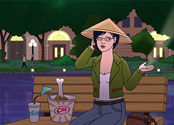
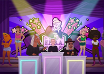
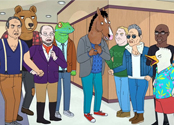
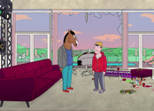
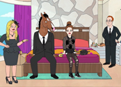
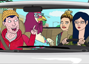

5-й сезон

Новый диван
БоДжек решает изменить своё отношение к жизни, думая что это сделает его по-настоящему счастливым. Так же начинается работа над фильмом Секретариат, во время которой выясняется, что БоДжек не такой уж и хороший актёр, как он думал.

Вчералэнд
Тодд воплощает в жизнь очередную свою мечту и строит Диснейленд. БоДжек же встречает особенную девушку Ванду.После вечеринки
3 небольших истории о происходящем после вечеринки-сюрприз в честь 35-летия Дианы. Принцесса Кэролин выясняет отношения с Винсентом на фоне того что у него другая семья. БоДжек и Ванда сбивают оленя и пытаются помочь ему, параллельно решая проблемы их отношений. И семейная сcора Дианы и Мистера Подхвоста.
Цыплята
БоДжек пытается стать ближе с Келси, чувствуя потребность в её признании. Тем временем дочь Келси — Ирвинг, Диана и Тодд пытаются спасти курицу, сбежавшую с птицефермы.
Цыплята
БоДжек пытается стать ближе с Келси, чувствуя потребность в её признании. Тем временем дочь Келси — Ирвинг, Диана и Тодд пытаются спасти курицу, сбежавшую с птицефермы.4-й сезон
После вечеринки
3 небольших истории о происходящем после вечеринки-сюрприз в честь 35-летия Дианы. Принцесса Кэролин выясняет отношения с Винсентом на фоне того что у него другая семья. БоДжек и Ванда сбивают оленя и пытаются помочь ему, параллельно решая проблемы их отношений. И семейная сcора Дианы и Мистера Подхвоста.
Высшая любовь
Компания PB Living разоряется, из-за нерациональных бизнес проектов Тодда и Мистера Подхвоста. Под угрозой потерять дом, Мистер Подхвост ищет себе новую работу. БоДжек пытается заставить Ванду признать, что та любит его, грозясь заняться Аутоасфиксиофилией.

Цыплята
БоДжек пытается стать ближе с Келси, чувствуя потребность в её признании. Тем временем дочь Келси — Ирвинг, Диана и Тодд пытаются спасти курицу, сбежавшую с птицефермы.

Цыплята
БоДжек пытается стать ближе с Келси, чувствуя потребность в её признании. Тем временем дочь Келси — Ирвинг, Диана и Тодд пытаются спасти курицу, сбежавшую с птицефермы.
Цыплята
БоДжек пытается стать ближе с Келси, чувствуя потребность в её признании. Тем временем дочь Келси — Ирвинг, Диана и Тодд пытаются спасти курицу, сбежавшую с птицефермы.3-й сезон
После вечеринки
3 небольших истории о происходящем после вечеринки-сюрприз в честь 35-летия Дианы. Принцесса Кэролин выясняет отношения с Винсентом на фоне того что у него другая семья. БоДжек и Ванда сбивают оленя и пытаются помочь ему, параллельно решая проблемы их отношений. И семейная сcора Дианы и Мистера Подхвоста.
Цыплята
БоДжек пытается стать ближе с Келси, чувствуя потребность в её признании. Тем временем дочь Келси — Ирвинг, Диана и Тодд пытаются спасти курицу, сбежавшую с птицефермы.
Цыплята
БоДжек пытается стать ближе с Келси, чувствуя потребность в её признании. Тем временем дочь Келси — Ирвинг, Диана и Тодд пытаются спасти курицу, сбежавшую с птицефермы.

Цыплята
БоДжек пытается стать ближе с Келси, чувствуя потребность в её признании. Тем временем дочь Келси — Ирвинг, Диана и Тодд пытаются спасти курицу, сбежавшую с птицефермы.2-й сезон

Всё ещё сломан
Херб Каззаз умирает. На банкете в честь открытия мемориальной скамейки Херба встречаются главные актеры Horsin’ around и вместе пытаются найти золото Херба и раскрыть тайну его гибели.После вечеринки
3 небольших истории о происходящем после вечеринки-сюрприз в честь 35-летия Дианы. Принцесса Кэролин выясняет отношения с Винсентом на фоне того что у него другая семья. БоДжек и Ванда сбивают оленя и пытаются помочь ему, параллельно решая проблемы их отношений. И семейная сcора Дианы и Мистера Подхвоста.

Цыплята
БоДжек пытается стать ближе с Келси, чувствуя потребность в её признании. Тем временем дочь Келси — Ирвинг, Диана и Тодд пытаются спасти курицу, сбежавшую с птицефермы.1-й сезон

Колючая булочка
БоДжек приютил у себя дома свою старую знакомую Сару Линн, так как чувствует свою ответственность за то, кем она стала.
Наша история это Д-история
Чтобы произвести на Диану впечатление, БоДжек (будучи в алкогольном опьянении) крадёт букву «D» с надписи «Hollywood». Тодд попадает в тюрьму где становится перед выбором в какую из тюремных банд ему податься.